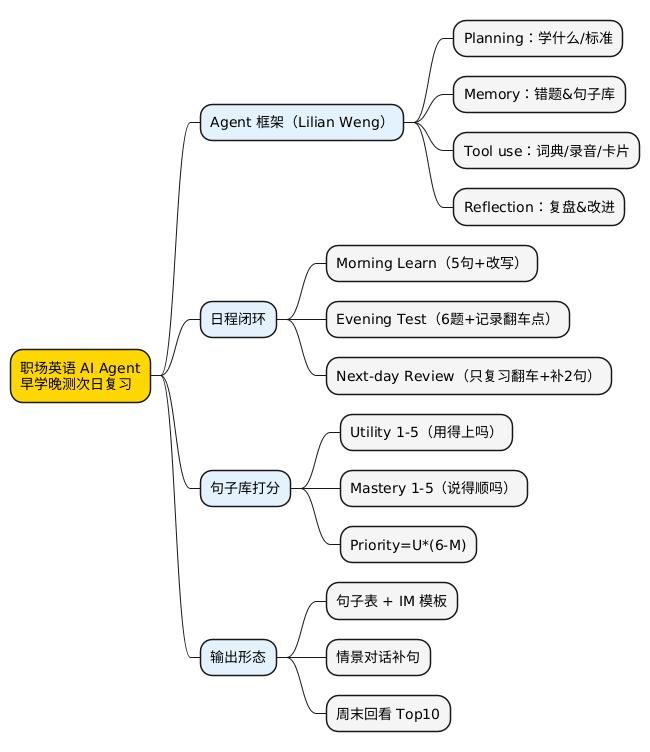

职场工具箱：用 AI Agent 学职场英语——早上学，晚上测，第二天复习
Posted on 一 23 2月 2026 in AI
| Abstract | 职场工具箱：用 AI Agent 学职场英语——早上学，晚上测，第二天复习 |
|---|---|
| Authors | Walter Fan |
| Category | Journal |
| Version | v1.0 |
| Updated | 2026-02-23 |
| License | CC-BY-NC-ND 4.0 |
简短大纲
展开看看
- 为什么你学英语总学不动：不是你懒，是你缺“反馈闭环” - AI Agent 的基本框架（参考 Lilian Weng）：计划、记忆、工具、复盘 - 设计一个“职场英语 Agent”：早上学、晚上测、第二天复习 - 句子库怎么打分：实用性(1~5) + 熟练度(1~5) - 给你一张可直接抄的句子表（10 条） - 坑点与边界：别把它当救命稻草 - 总结：Checklist + 金句 + 思维导图1. 先问一个扎心的问题
你是不是也干过这种事：
周日晚上雄心壮志，打开一个“职场英语 1000 句”，刷了 30 分钟。
周一早上开会要表达“我建议先对齐范围”，嘴里蹦出来的却是：“I think… em… maybe… align…？”
然后你就开始怀疑人生：我到底学了个啥？
我后来发现，问题经常不在“材料不够”，也不在“方法不高级”，而在一个更朴素的东西：你没有闭环。
你没有一个系统每天逼你输出、帮你纠错、第二天再追着你复习。
所以今天我想聊的是：怎么设计一个学习职场英语的 AI Agent——不花哨，能落地。早上学，晚上测，第二天复习。跑一周，你就知道它值不值。
2. What：AI Agent 的基本框架（别神化它）
我很喜欢 Lilian Weng 那篇文章的拆法：把 LLM 当“脑子”，外面挂四个器官——计划（planning）、记忆（memory）、工具（tool use）、复盘（reflection）。原文在这里：https://lilianweng.github.io/posts/2023-06-23-agent/。
把这四个词翻成“学习英语的人话版”：
- 计划：今天学什么？学到什么程度算过关？
- 记忆：你上次卡在什么句型？哪些句子你老是说错？
- 工具：查词典、查例句、录音、打分、做题、做卡片。
- 复盘：你哪儿又翻车了？下次怎么避免？
你会发现：这不就是一个稍微靠谱点的“学习搭子”吗？只不过它不嫌你啰嗦，也不会在你第 7 次说错时翻白眼。
3. How：一个“职场英语 Agent”的日程设计（早学晚测次日复习）
我给它的设计目标很简单：每天只做三件事，每件事都能在 10~15 分钟内完成。
别给自己加戏，别把学习做成项目管理。
3.1 早上：Learn（输入）——只学 5 句，但要学“能用的”
早上你脑子清醒，适合“输入 + 小改写”。
Agent 早上给你输出一页内容就够了：
- 今日主题（例如：对齐范围 / 风险提示 / 进度更新 / 请求支持）
- 5 条高频句（每句配 1 个使用场景）
- 你要做的动作：每句做一次“替换式改写”（把其中的名词换成你今天要用的项目名）
举例：
“Let’s align on the scope first.”
你改写成：
“Let’s align on the scope for the Q1 rollout first.”
这一步的精髓是：让句子长在你的工作里，而不是长在课本里。
3.2 晚上：Test（输出）——别背，直接“用”
晚上你累了，不适合学新东西，适合“测”。
Agent 给你 6 道题（别多）：
- 2 道：中文 → 英文（限时 30 秒）
- 2 道：英文 → 中文（确认你没理解歪）
- 2 道：情景题（给你一段对话，你补一句）
关键是评分：对错不是最重要的，重要的是把“你在哪儿卡住”记录下来，留到第二天复习。
3.3 第二天：Review（复习）——复习昨天翻车的地方
第二天早上，Agent 不再给你全新 5 句，而是：
- 从昨天的题里捞出你错的 2~3 个点
- 用“更小的练习”让你过关（比如只练一个结构：I suggest … / I recommend …）
- 过关后再补 2 句新句子
这套节奏其实很像我们做工程：先跑通最小闭环，再逐步加功能。
4. 句子库怎么打分（1~5）：实用性 + 熟练度
你说要给常用句子打分，我建议分两个维度，不要混在一起。
4.1 实用性（Utility，1~5）
它回答一个问题：这句话在你工作里用得上吗？
- 5：一周至少用 3 次（进度、对齐、风险、请求支持这类）
- 4：一周能用 1 次
- 3：一个月能用 1 次
- 2：很少用，但知道也不亏
- 1：几乎用不上（先别学）
4.2 熟练度（Mastery，1~5）
它回答一个问题：你说得出来吗？说得顺吗？
- 5：不看稿也能顺口说出来，还能改写
- 4：基本能说，但偶尔卡壳
- 3：看一眼能说，离开提示就忘
- 2：经常说错结构/介词/时态
- 1：只认识单词，拼不成句
4.3 一个简单的“优先级公式”
别搞复杂算法，先用这个就够：
Priority = Utility × (6 - Mastery)
实用性越高、熟练度越低，优先级越高。
这就是你每天“复习列表”的排序依据。
5. 给你一张可直接抄的句子表（10 条）
| # | 句子（英文） | 常用场景 | Utility | Mastery | 你今天要做的最小动作 |
|---|---|---|---|---|---|
| 1 | Let’s align on the scope first. | 评审/对齐 | 5 | 3 | 把 scope 换成你项目名说一遍 |
| 2 | Here’s the latest status update. | 周报/同步 | 5 | 4 | 录音 1 次，听一遍自己语速 |
| 3 | The risk is that we might slip the timeline. | 风险提示 | 5 | 2 | 把 risk 部分改写成你真实风险 |
| 4 | I suggest we start with a small pilot. | 推新流程/试点 | 4 | 3 | 用“我建议+原因”扩一句 |
| 5 | Can we clarify the acceptance criteria? | 需求不清 | 5 | 2 | 立刻写一条 IM 模板 |
| 6 | I’ll follow up and keep you posted. | 跟进/承诺 | 4 | 4 | 找一个能替换的同义表达 |
| 7 | I’m blocked by X. | 依赖阻塞 | 5 | 3 | 补一句“我需要你什么” |
| 8 | Let’s park this and revisit it tomorrow. | 争议搁置 | 3 | 3 | 配一条更礼貌的替代说法 |
| 9 | Thanks for the heads-up. | 表达感谢 | 4 | 5 | 练一个更自然的语气 |
| 10 | I might be wrong, but here’s my take. | 表达观点 | 3 | 2 | 写出 2 个更谨慎的变体 |
这张表你可以直接复制到 Notion / 飞书 / 备忘录里。关键不是表格本身，而是每天更新两列：Utility、Mastery。
6. 坑点与边界（别把它当救命稻草）
-
坑 1：句子学得很优雅，但一句都用不上
这是“材料型努力”，看着很努力，实际没增长。 -
坑 2：只学不测，永远停在“看得懂”
职场英语最要命的不是阅读，是当场开口。你不输出，它就不属于你。 -
坑 3：测了也不复习，翻车点永远原地踏步
复习只盯“昨天翻车的地方”，别贪多。 -
边界：这套 Agent 适合“日常沟通和表达”，不适合替代系统学习（发音、语法体系、写作风格这些还是得慢慢补）。它更像健身房——让你持续出汗，不负责让你一夜练成施瓦辛格。
总结：Checklist + 金句
明天就能做的 5 件事
- [ ] 建一个“句子库”表（就用上面那 10 条开头），加两列：Utility、Mastery。
- [ ] 早上只学 5 句，并且每句做一次“替换式改写”。
- [ ] 晚上做 6 道题，限时，把翻车点记录下来。
- [ ] 第二天只复习翻车点，再补 2 句新句子。
- [ ] 每周末回看一次 Priority 排序：高优先的句子，必须变成你的口头禅。
金句
别把英语学成“背诵比赛”，把它学成“工作肌肉”。有闭环，就会长。
思维导图
@startmindmap
<style>
mindmapDiagram {
node { BackgroundColor #FAFAFA }
:depth(0) { BackgroundColor #FFD700 }
:depth(1) { BackgroundColor #E3F2FD }
:depth(2) { BackgroundColor #F5F5F5 }
}
</style>
* 职场英语 AI Agent\\n早学晚测次日复习
** Agent 框架（Lilian Weng）
*** Planning：学什么/标准
*** Memory：错题&句子库
*** Tool use：词典/录音/卡片
*** Reflection：复盘&改进
** 日程闭环
*** Morning Learn（5句+改写）
*** Evening Test（6题+记录翻车点）
*** Next-day Review（只复习翻车+补2句）
** 句子库打分
*** Utility 1-5（用得上吗）
*** Mastery 1-5（说得顺吗）
*** Priority=U*(6-M)
** 输出形态
*** 句子表 + IM 模板
*** 情景对话补句
*** 周末回看 Top10
@endmindmap

扩展阅读
系列回顾
- 4D 总结法
- 黄金圈法则
- TNB 表达模型
- FAB 提案法
- STAR 面试法
- 同理心三方法
- 5W1H + 8C1D
- 艾森豪威尔矩阵
- PDCA 循环
- SMART 原则
- 领导力
- 逻辑树
- 解决问题五步法
- 5 个 Why
- 沟通四要素 CARE
- 金字塔原理
- 三点法
- DACI
- 四线复盘法
- RAPID
- 5S 问题处理法
- SWOT 自我定位
- AARRR 漏斗
- 第一性原理
- RACI
- 非暴力沟通
- SCAMPER
- MVP 思维
- ABC 情绪理论
- AI Agent 学职场英语（本篇）
- 向上管理
- OODA 循环
本作品采用知识共享署名-非商业性使用-禁止演绎 4.0 国际许可协议进行许可。